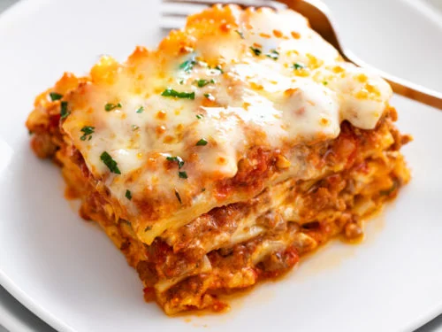

Home
Lasagna

Description
This is a recipe for lasgana! Lasagna is a delicious pasta dish that might be from Italy but honestly who knows anymore, am I right?
This recipe is totally from the internet and is not a traditional family recipe at all. Or at least it's not MY family's traditional recipe. Because I wouldn't put that out there like that. That's weird.
Ingredients
Cheese Filling
- 15 Oz. ricotta cheese
- 1 large egg
- 2 cups mozzarella cheese
- 3/4 cup Parmesan cheese, (freshly grated)
- 2 teaspoons italian seasoning
- 1/2 teaspoon salt
- 1/4 teaspoon pepper
Meat Sauce
- 1 tablespoon olive oil
- 1 yellow onion, finely diced
- ¾ lb. ground beef
- ¾ lb. ground Italian sausage
- 3 cloves garlic, minced
- ½ cup chicken broth
- 40 oz. marinara sauce
- 1 tablespoon tomato paste
- 1 teaspoon hot sauce
- 1 teaspoon Worcestershire sauce
Lasana Noodles/Cheese Topping
- 12 Lasagna noodles, plus extra in case of breakage
- 2.5 cups mozzarella cheese